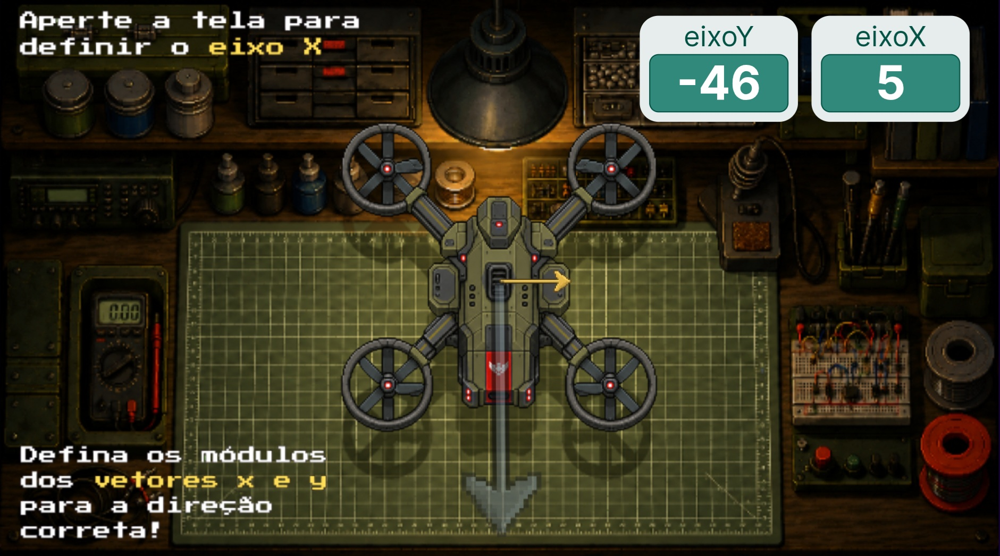

Vector Drone
Criador: Erick Alves
🕮 GUIA
O jogo 'Vector Drone' explora de uma maneira divertida o estudo de soma vetorial. O objetivo do jogo é entregar os suprimentos médicos aos sobreviventes, e para isso, o jogador deve acertar a soma vetorial que o leva até a direção deles através dos movimentos do próprio dispositivo. Divirta-se e aprenda!